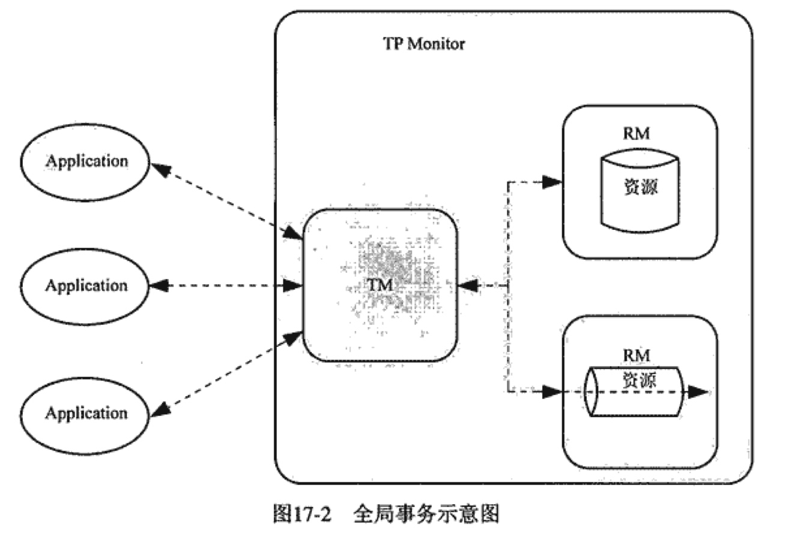
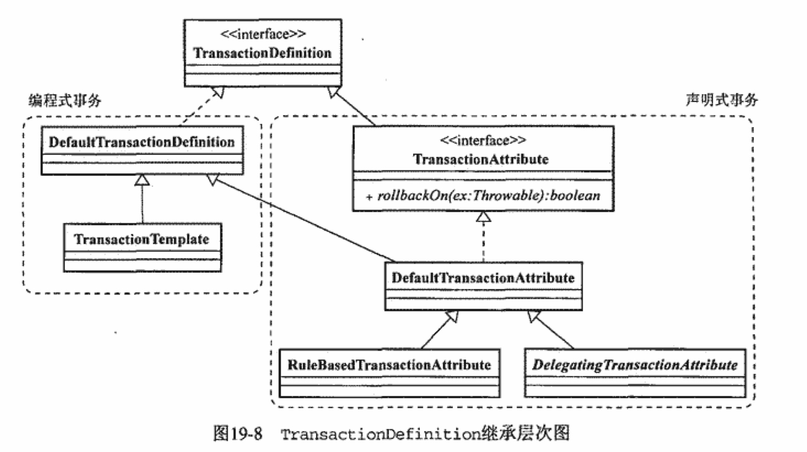
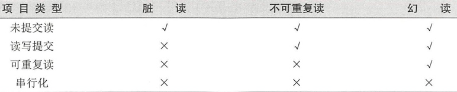
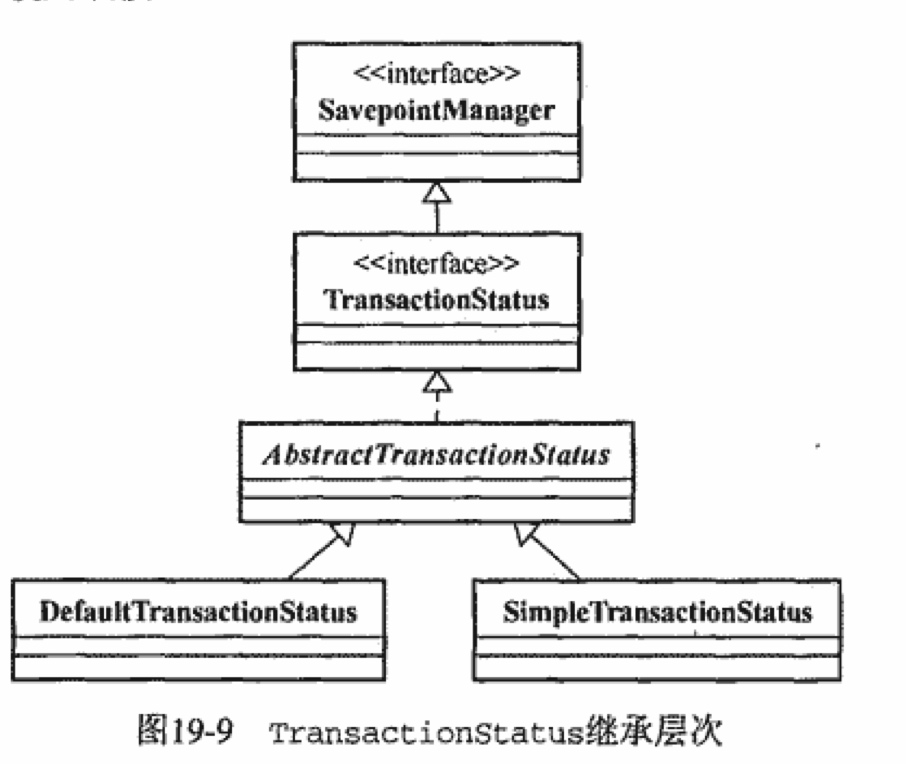
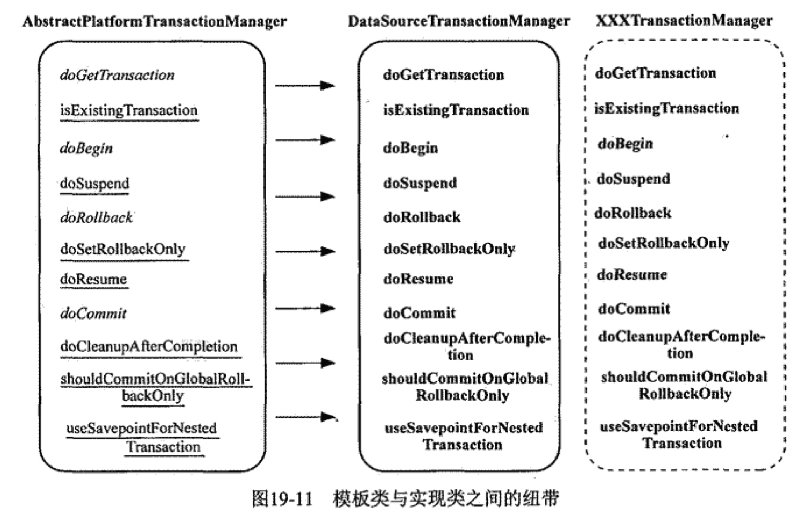
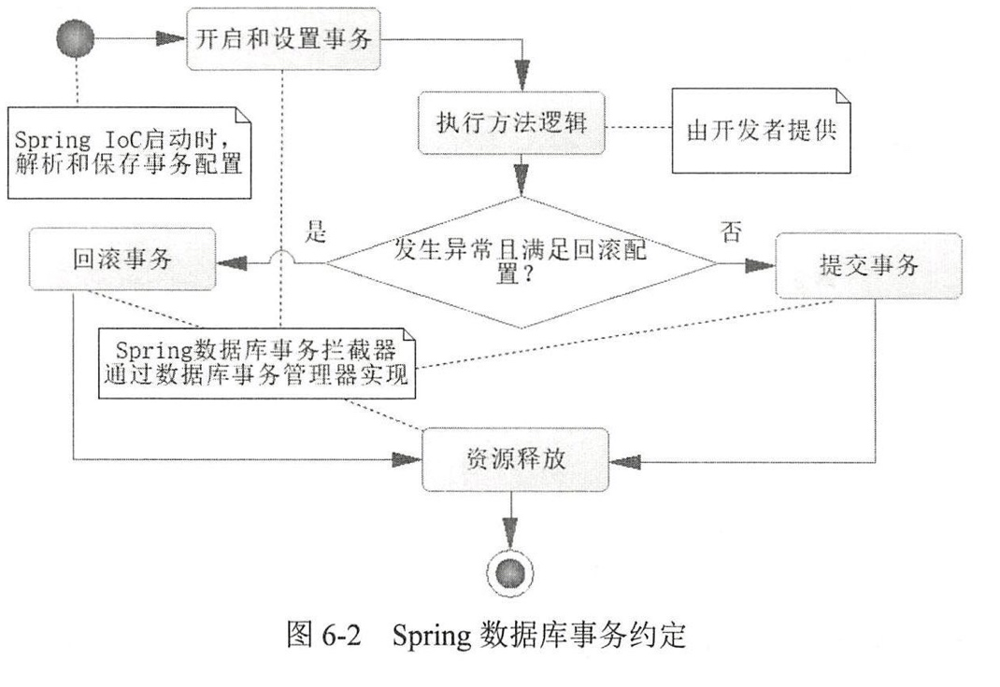

Spring 事务
事务模型
为了保证数据的正确性，事务需要遵守 ACID 原则：
- 原子性(Atomicity)，即事务所包含的操作是一个整体，要不全部成功要不全部失败。
- 一致性(Consistency)，事务执行前后数据保持一致性。
- 隔离性(Isolation)，主要对于并发而已，规定了事务直接的相互影响程度。
- 持久性(Durability)，一旦事务成功提交，更改不可逆。
具体例子如下：
public class Service{
@Autowired
private PlatformTransactionManager transactionManager;
public void doService(){
TransactionDefinition definition = ;
TransactionStatus status = transactionManager.getTransaction(definition);
try{
dao.doDataAccess();
}
catch(Exception e){
transactionManager.rollback(status);
throw e;
}
transactionManager.commit(status);
}
}
事务组成
Resource Manager，简称 RM 即资源管理，比如数据库连接。Transaction Processing Monitor，简称 TP Monitor，在分布式场景中协调多个 RM 的事务处理。一般由特定的中间件实现。Transaction Manager，简称 TM，是 TP monitor 中的核心模块。Application，即容器中的应用。
根据 RM 的参数数量来区分：
- 全局事务，即分布式事务，需要引入 TP Monitor 来协调。采用两段式提交来保证事务的 ACID。
- 
- 局部事务，容易理解。
事务管理接口
TransactionDefinition
public interface TransactionDefinition {
// 返回事务的传播行为
int getPropagationBehavior();
// 返回事务的隔离级别
int getIsolationLevel();
//返回事务的名字
String getName()；
// 返回事务必须在多少秒内完成
int getTimeout();
// 返回是否优化为只读事务。
boolean isReadOnly();
}

隔离级别
并发事务可能出现的数据不一致性的情况
- 脏读(dirty read)，一个事务对数据进行了修改未提交时，另一个事务读取了这个数据，如果前一个事务回滚就会发生脏读。
- 修改丢失(Lost to Modify)，一个事务修改未提交时，另一个事务对其修改提交，导致前一个事务的修改丢失。
- 不可重复读(Unrepeatableread)，一个事务两次读取同一数据之中，另一事务修改了改数据，导致两次读取到的数据不相同。
- 幻影读(phantom read)，一个事务读取一批数据时，另一个数据插入了另一批数据。导致前一个事务再次读取时发现这批数据不一致。
隔离级别
- 未提交读(read uncommited)，允许一个事务读取另外一个事务没有提交的事务。脏度发生的情况。
- 读写提交(read commit)，一个事务只能读取另一个事务已经提交的数据。不可重复读发生的情况。
- 可重复读
- 串行化(Serializable)，要求所有 SQL 按顺序执行。

传播行为
事务传播行为（为了解决业务层方法之间互相调用的事务问题）： 当事务方法被另一个事务方法调用时，必须指定事务应该如何传播。
通过枚举类 Propagation 定义，有七种类型：
- 支持当前事务的情况
REQUESTED，默认传播行为，存在事务则沿用否则新建。SUPPORTS，存在事务则沿用，不存在维持无事务。MANDATORY，必须使用事务，无则抛出异常。
- 不支持当前事务的情况：
REQUIRES_NEW，无论事务是否存在都创建一个新的。NOT SUPPORTED，不支持事务，如果存在事务则先挂起事务再运行方法。NEVER，不支持事务，如果有事务则抛出异常。
- 其他
NESTED，只回滚子方法的SQL。
TransactionStatus
PlatformTransactionManager.getTransaction() 会返回一个 TransactionStatus 对象。
这个对象定义了事务处理过程中的事务状态。
public interface TransactionStatus{
boolean isNewTransaction(); // 是否是新的事物
boolean hasSavepoint(); // 是否有恢复点
void setRollbackOnly(); // 设置为只回滚
boolean isRollbackOnly(); // 是否为只回滚
boolean isCompleted; // 是否已完成
}

PlatformTransactionManager
PlatformTransactionManager 是事务抽象的核心接口，定义如下：
public interface PlatforrnTransactionManager {
// 获取事务 ，它还会设置数据属性
TransactionStatus getTransaction(TransactionDefinition definition)
throws TransactionException ;
// 提交事务
void commit(TransactionStatus status)
throws TransactionException ;
// 回滚事务
void rollback(TransactionStatus status)
throws TransactionException;
}
根据不同的 DAO层的有不同实现类，常见的有：
- 局部（单机）事务：
DataSourceTransactionManager，JDBC/MyBaitis 的实现。HibernateTransactionManager，Hibernate 的实现。JpaTransactionManager
- 全局（分布式）：
- 省略
DAO 层在实现自己的 TransactionManager 会基于 AbstractTransactionManager 为抽象父类以 Strategy 模式实现。
AbstractTransactionManager 提供了几个模板方法
public final TransactionStatus getTransaction(TransactionDefinitiondefinition)
throws Transact ionException
public final void rollback(TransactionStatus status)
throws TransactionException
public final void commit (TransactionStatus status)
throws TransactionException
protected final SuspendedResourcesHolder suspend (Object transaction)
throws TransactionException
protected final void resume(Object transaction, SuspendeaResourcesHolder resourcesHo1der)
throws TransactionException

注意点
事务基于 AOP 实现，必须要通过调用代理对象来实现。
事务例子
事务在 Spring 中有不同的方式来实现：
- 编程式事务： 通过Transaction Template手动管理事务，实际应用中很少使用。
- 声明式事务： 推荐使用（代码侵入性最小），实际是通过AOP实现
- 基于 TransactionInterceptor 的声明式事务
- 基于 TransactionProxyFactoryBean 的声明式事务
- 基于
和 命名空间的声明式事务管理 - 基于 @Transactional 的全注解方式，推荐使用

编程式
OrdersDao.java(Dao层)
import org.springframework.jdbc.core.JdbcTemplate;
@Repository
public class OrdersDao {
@Autowired
private JdbcTemplate jdbcTemplate;
// 小王少钱的方法
public void reduceMoney() {
String sql = "update account set salary=salary-? where username=?";
jdbcTemplate.update(sql, 1000, "小王");
}
// 小马多钱的方法
public void addMoney() {
String sql = "update account set salary=salary+? where username=?";
jdbcTemplate.update(sql, 1000, "小马");
}
}
OrdersService.java（业务逻辑层）
@Service
public class OrdersService {
@Autowired
private OrdersDao ordersDao;
@Autowired
private TransactionTemplate transactionTemplate;
// 业务逻辑
public void accountMoney() {
transactionTemplate.execute(new TransactionCallback<Object>() {
@Override
public Object doInTransaction(TransactionStatus status) {
Object result = null;
try {
ordersDao.addMoney();
int i = 10 / 0; // 人为构造异常
ordersDao.reduceMoney();
} catch (Exception e) {
status.setRollbackOnly();
result = false;
System.out.println("Transfer Error!");
}
return result;
}
});
}
}
TestService.java（测试方法）
public class TestService {
@Test
public void testAdd() {
ApplicationContext context = new ClassPathXmlApplicationContext(
"beans.xml");
OrdersService userService = (OrdersService) context
.getBean("ordersService");
userService.accountMoney();
}
}
配置文件：
<?xml version="1.0" encoding="UTF-8"?>
<beans xmlns="http://www.springframework.org/schema/beans"
xmlns:xsi="http://www.w3.org/2001/XMLSchema-instance" xmlns:context="http://www.springframework.org/schema/context"
xmlns:aop="http://www.springframework.org/schema/aop" xmlns:tx="http://www.springframework.org/schema/tx"
xsi:schemaLocation="http://www.springframework.org/schema/beans http://www.springframework.org/schema/beans/spring-beans-2.5.xsd
http://www.springframework.org/schema/context http://www.springframework.org/schema/context/spring-context-2.5.xsd
http://www.springframework.org/schema/aop http://www.springframework.org/schema/aop/spring-aop-2.5.xsd
http://www.springframework.org/schema/tx http://www.springframework.org/schema/tx/spring-tx-2.5.xsd">
<!-- 配置c3po连接池 -->
<bean id="dataSource" class="com.mchange.v2.c3p0.ComboPooledDataSource">
<!-- 注入属性值 -->
<property name="driverClass" value="com.mysql.jdbc.Driver"></property>
<property name="jdbcUrl" value="jdbc:mysql://localhost:3306/wangyiyun"></property>
<property name="user" value="root"></property>
<property name="password" value="153963"></property>
</bean>
<!-- 编程式事务管理 -->
<!-- 配置事务管理器 -->
<bean id="dataSourceTransactionManager"
class="org.springframework.jdbc.datasource.DataSourceTransactionManager">
<!-- 注入dataSource -->
<property name="dataSource" ref="dataSource"></property>
</bean>
<!-- 配置事务管理器模板 -->
<bean id="transactionTemplate"
class="org.springframework.transaction.support.TransactionTemplate">
<!-- 注入真正进行事务管理的事务管理器,name必须为 transactionManager否则无法注入 -->
<property name="transactionManager" ref="dataSourceTransactionManager"></property>
</bean>
<!-- JDBC模板对象 -->
<bean id="jdbcTemplate" class="org.springframework.jdbc.core.JdbcTemplate">
<property name="dataSource" ref="dataSource"></property>
</bean>
</beans>
AspectJ的声明式
OrdersService.java（业务逻辑层）同上。
主要区别在配置上：
<!-- 配置c3po连接池 -->
<bean id="dataSource" class="com.mchange.v2.c3p0.ComboPooledDataSource">
<!-- 注入属性值 -->
<property name="driverClass" value="com.mysql.jdbc.Driver"></property>
<property name="jdbcUrl" value="jdbc:mysql://localhost:3306/wangyiyun"></property>
<property name="user" value="root"></property>
<property name="password" value="153963"></property>
</bean>
<!-- 第一步：配置事务管理器 -->
<bean id="dataSourceTransactionManager"
class="org.springframework.jdbc.datasource.DataSourceTransactionManager">
<!-- 注入dataSource -->
<property name="dataSource" ref="dataSource"></property>
</bean>
<!-- 第二步：配置事务增强 -->
<tx:advice id="txadvice" transaction-manager="dataSourceTransactionManager">
<!-- 做事务操作 -->
<tx:attributes>
<!-- 设置进行事务操作的方法匹配规则 -->
<!-- account开头的所有方法 -->
<!--
propagation:事务传播行为；
isolation：事务隔离级别；
read-only：是否只读；
rollback-for：发生那些异常时回滚
timeout:事务过期时间
-->
<tx:method name="account*" propagation="REQUIRED"
isolation="DEFAULT" read-only="false" rollback-for="" timeout="-1" />
</tx:attributes>
</tx:advice>
<!-- 第三步：配置切面 切面即把增强用在方法的过程 -->
<aop:config>
<!-- 切入点 -->
<aop:pointcut expression="execution(* cn.itcast.service.OrdersService.*(..))"
id="pointcut1" />
<!-- 切面 -->
<aop:advisor advice-ref="txadvice" pointcut-ref="pointcut1" />
</aop:config>
<!-- 对象生成及属性注入 -->
<bean id="jdbcTemplate" class="org.springframework.jdbc.core.JdbcTemplate">
<property name="dataSource" ref="dataSource"></property>
</bean>
@Transactional
OrdersService.java（业务逻辑层）
@Transactional(propagation = Propagation.REQUIRED, isolation = Isolation.DEFAULT, readOnly = false, timeout = -1)
public class OrdersService {
@Autowired
private OrdersDao ordersDao;
public void accountMoney() {
ordersDao.addMoney();
// 解决办法是出现异常后进行事务回滚
// int i = 10 / 0;// 事务管理配置后异常已经解决
ordersDao.reduceMoney();
}
}
配置：
<!-- 配置c3po连接池 -->
<bean id="dataSource" class="com.mchange.v2.c3p0.ComboPooledDataSource">
<!-- 注入属性值 -->
<property name="driverClass" value="com.mysql.jdbc.Driver"></property>
<property name="jdbcUrl" value="jdbc:mysql://localhost:3306/wangyiyun"></property>
<property name="user" value="root"></property>
<property name="password" value="153963"></property>
</bean>
<!-- 第一步：配置事务管理器 (和配置文件方式一样)-->
<bean id="dataSourceTransactionManager"
class="org.springframework.jdbc.datasource.DataSourceTransactionManager">
<!-- 注入dataSource -->
<property name="dataSource" ref="dataSource"></property>
</bean>
<!-- 第二步： 开启事务注解 -->
<tx:annotation-driven transaction-manager="dataSourceTransactionManager" />
<!-- 第三步 在方法所在类上加注解 -->
<!-- 对象生成及属性注入 -->
<bean id="jdbcTemplate" class="org.springframework.jdbc.core.JdbcTemplate">
<property name="dataSource" ref="dataSource"></property>
</bean>
使用 @Transactional 来注解需要使用事务的地方。Spring 建议使用在类上。
定义如下：
package org.springframework.transaction.annotation;
/**** imports ****/
@Target([ElementType.METHOD, ElementType.TYPE))
@Retention RetentionPolicy.RUNTIME)
@Inherited
@Documented
public @interface Transactional {
// 通过 bean name 指定事务管理器
@AliasFor ("transactionManager")
String value() default "";
// 同 value 属性
@AliasFor("value")
String transactionManager () default "";
// 指定传播行为
Propagation propagation() default Propagation. REQUIRED;
// 指定隔离级别
Isolation isolation() default Isolation. DEFAULT ;
// 指定超时时间（单位秒）
int timeout() default TransactionDefinition. TIMEOUT DEFAULT;
// 是否只读事务
boolean readOnly() default false;
// 方法在发生指定异常时回滚 ，默认是所有异常都回滚
Class<? extends Throwable>[] rollbackFor() default {};
// 方法在发生指定异常名称时回滚，默认是所有异常都回滚
String[] rol1backForClassName() default [];
// ／方法在发生指定异常时不回滚，默认是所有异常都回滚
Class<? extends Throwable>[] noRollbackFor() default {} ;
// ／方法在发生指定异常名称时不回滚，默认是所有异常都回滚
String[] noRollbackForClassName() default {};
}